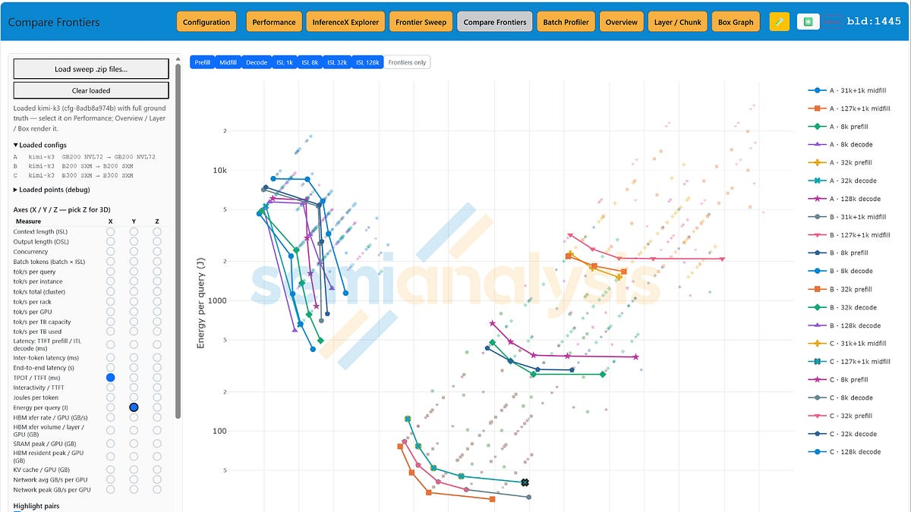
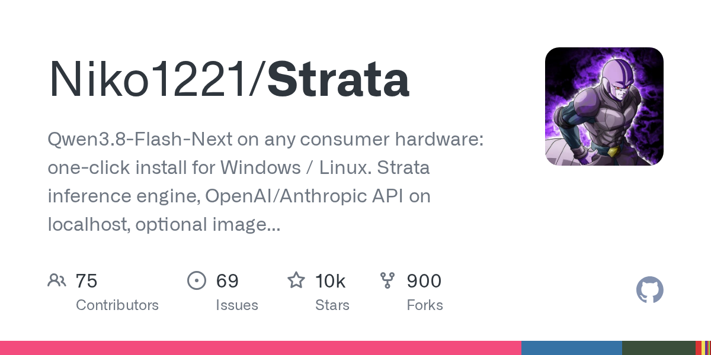
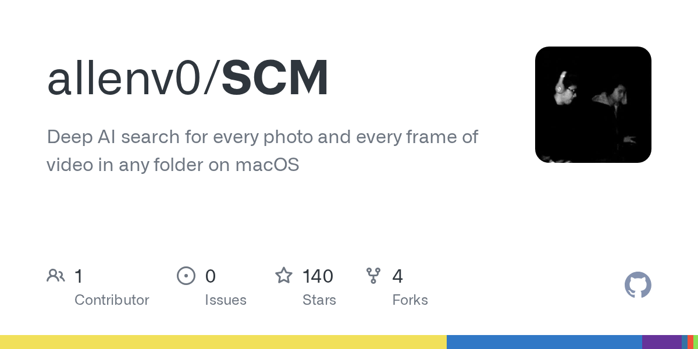
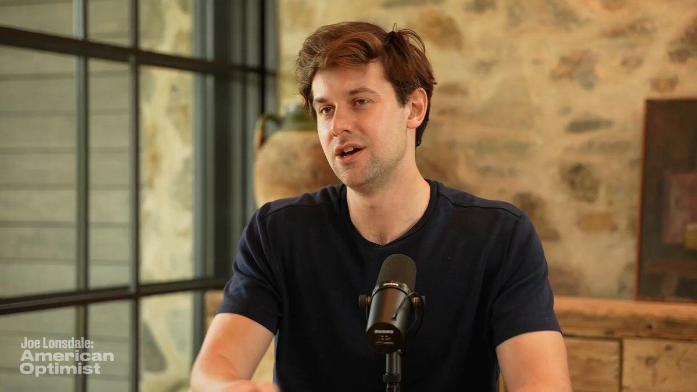
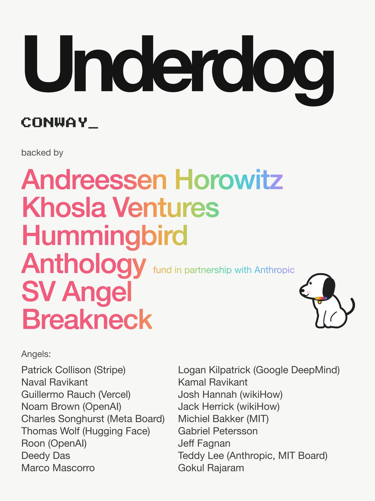
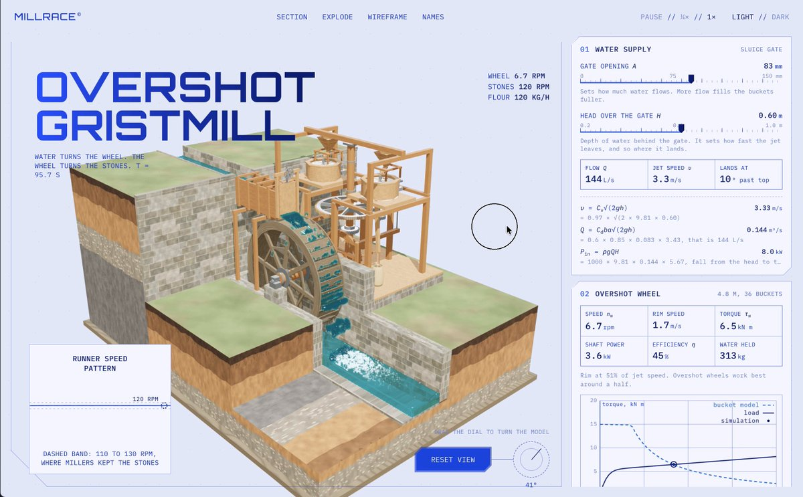
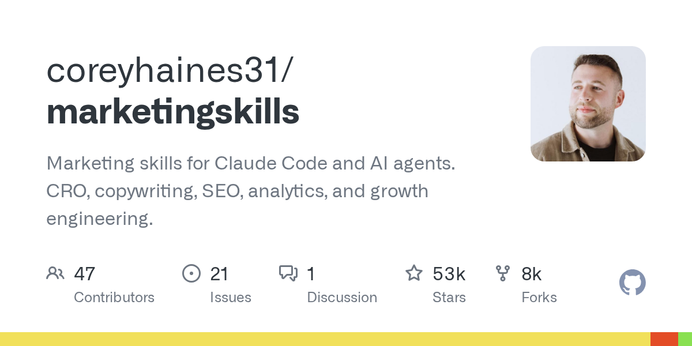

01
ClusterMAX 3.0 比较 GPU 云的运营表现
SemiAnalysis 的 ClusterMAX 3.0 对全球 GPU 云提供商的可靠性、性能、支持、定价与安全进行分析。该文发布于 9 月 23 日，属于背景资料，而非今日发布。模型基础设施采购不能只比较加速器规格；现有摘要未给出排名或测量结果，因此不能据标题判断优胜者。
每天一次，过滤 AI 噪音
SemiAnalysis 的 ClusterMAX 3.0 对全球 GPU 云提供商的可靠性、性能、支持、定价与安全进行分析。该文发布于 9 月 23 日，属于背景资料，而非今日发布。模型基础设施采购不能只比较加速器规格；现有摘要未给出排名或测量结果，因此不能据标题判断优胜者。

SemiAnalysis 的 9 月 21 日文章讨论混合专家模型如何映射到推理硬件，强调结构、数据流和高效服务。这为受限硬件运行大型模型提供背景：推理不仅取决于计算，也取决于数据移动。现有摘要没有基准表或实现步骤，不能用它验证今日项目的具体吞吐宣称。
Simon Willison 主张服务默认采用硬性预算上限。采集时，该文章在 Hacker News 获得 550 分和 283 条评论。对于能够反复调用付费工具的智能体，关键问题是预算限制能否真正停止执行，而非仅在费用累积后发出提醒。

Hacker News 上的 Strata 项目宣称，可在消费级 RTX 4090 上以每秒 100 个 token 运行 1250 亿参数的 Qwen 3.8 Flash Next。采集时该帖获得 302 分和 158 条评论。这些是项目宣传数据，尚未独立复现；评估时应关注内存需求、模型配置及可复现的吞吐测试。
《纽约时报》关于宗教学者与 Anthropic 会面的报道引发 Hacker News 讨论，采集时有 142 分和 345 条评论。该事件让 AI 与道德推理问题进入更广泛的公共讨论。现有采集资料支持会面报道，但不能据此认定 Claude 具有意识，或与会者就机器道德地位达成一致。

Show HN 项目 SCM 宣称可在 macOS 上搜索照片及视频中的每一帧，采集时获得 75 分与 40 条评论。它聚焦已有视觉素材的检索，可与生成式工具互补。现有条目未说明索引性能、模型选择或隐私保证，使用个人素材库前仍需核查。
gVisor 官方博客宣布向云原生计算基金会捐赠该项目，消息于 10 月 4 日出现在 Hacker News。对于执行代码的系统及 AI 智能体，沙箱基础设施是重要依赖。现有条目说明治理变化，但没有新的安全基准，基金会治理与具体部署的隔离能力应分别评估。
François Chollet 反对从“意识涉及计算”直接推导“计算型 AI 很可能有意识”。他用生物与岩石都由原子组成的类比说明逻辑问题。10 月 4 日的帖子获得超过两千个赞。这是对论证的批评，而非关于感知能力的实验证据，提醒读者区分共同组成要素与已证实的属性。

Gary Marcus 在 10 月 4 日提醒，不应把 AI 资本支出增长与 GDP 翻倍这样的预测视为同等可信。其核心区分是基础设施投入与实际经济收益。这是对技术讨论中预测话术的批评，并不是证明未来增长路径的量化模型。
Nathan Lambert 认为放缓前沿 AI 发展在原则上有吸引力，但实际执行困难。他追问限制哪些基准、由谁参与，并指出集群与效率研究仍可能推动系统进步。问题在于如何定义进展，以及规则如何覆盖不依赖扩大模型的能力提升路径。

Thomas Wolf 主张多数个人 AI 应在用户自己的设备上运行，并提及由 Hugging Face Hub 支持的 Sigil Underdog。该帖表达部署方向上的支持，而非详细性能报告。结合消费硬件推理的关注度，可见设备端工具需求正在增长，具体硬件和隐私特性仍需逐项评估。
Kyle Wiggers 介绍了一个旨在本地生成带引用科学报告的 80 亿参数模型。简短公告给出了规模与用途，但没有提供评测结果或足够的引用准确性证据。这一方向将科研辅助带到本地设备；对科研用户而言，核查来源是否支持每项结论仍然重要。
Kling AI 宣布将在 10 月 6 日纽约广告周讨论规模化创意制作，并将该活动定位于 Kling 4.0 发布之前。这是日程与产品方向更新，不代表新模型已开放。关注生成视频的团队可继续观察正式发布的能力与制作控制细节。

Claude 官方账号展示了一个使用 Opus 5.5 制作的可运转水车，作为近期用户作品案例。采集时该帖获得超过一万个赞及四千次收藏。它体现了模型参与原型制作的兴趣，但没有交代完整过程或区分模型贡献，因此属于作品展示而非受控能力评测。
Python 项目 text-to-cad 旨在赋予智能体 CAD 能力，采集时有 16,745 个 GitHub 星标。它指向可产出结构化设计成果的智能体。现有项目描述较简短，投入制造或生产前，应检查支持的几何操作、输出格式以及工程公差。

marketingskills 仓库为 Claude Code 及其他智能体提供营销技能，覆盖转化优化、文案、搜索优化、分析和增长工程，采集时有 52,915 个星标。其价值方向是用可复用任务指令扩展通用智能体。受欢迎程度并不证明商业效果，团队仍需依据自身内容标准、数据权限和结果验证技能。